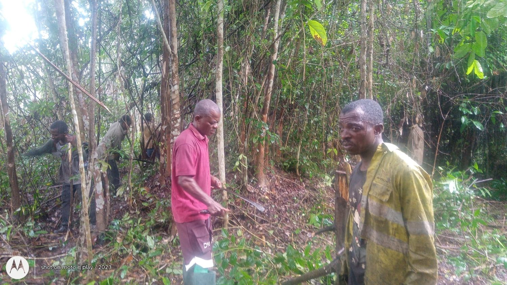
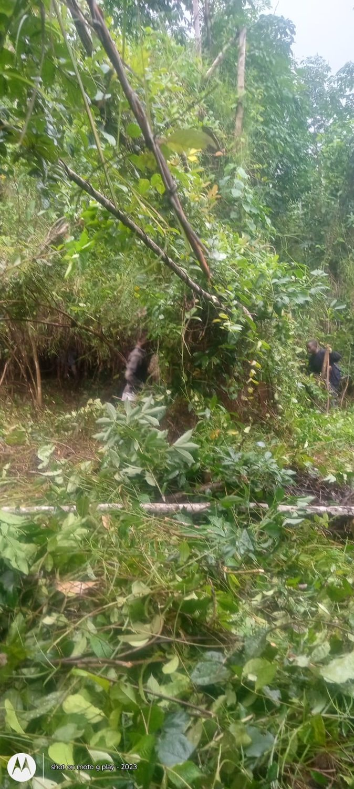
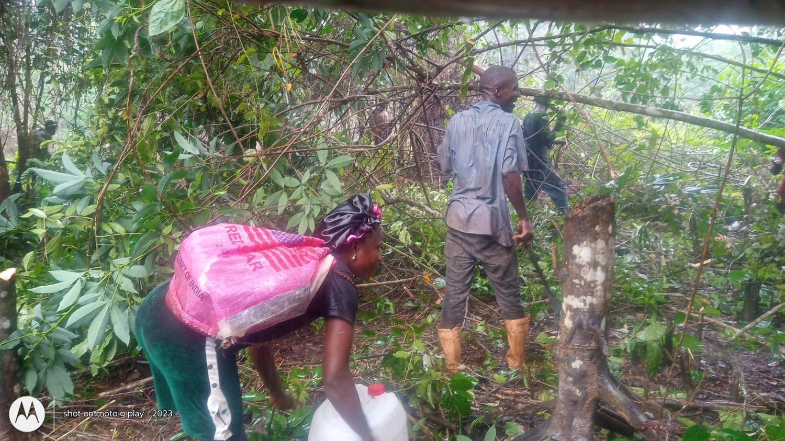
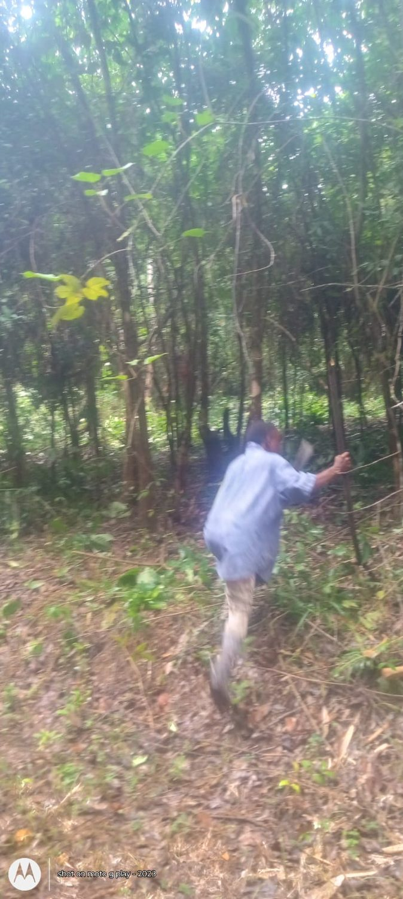
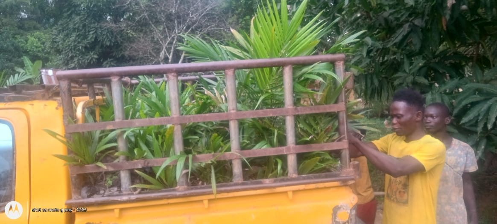
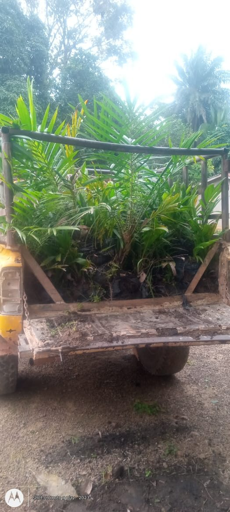

Agriculture
Five Acres. Nine Crops in Our Development Portfolio.
CrestaSeed's operations begin with five acres of cultivated and prepared farmland in Bong County, Liberia. Through a diversified portfolio of food and cash crops, we aim to strengthen agricultural production, develop market opportunities, and progressively expand into processing and value-added manufacturing. Agriculture serves as the starting point for building productive assets and future commercial growth.
Our Crop Development Portfolio
Nine food and cash crops at different stages of development and planning, supporting a diversified agricultural strategy.
Rice
A vital staple food in Liberia and across global markets, rice offers opportunities to strengthen food security, expand local production, and meet growing consumer demand. CrestaSeed aims to develop rice cultivation as a foundation for commercial growth and future value-added processing.
Banana
A relatively fast-growing tropical crop with opportunities in fresh-produce markets. Banana cultivation supports crop diversification and offers potential for recurring commercial production as operations mature.
Plantain
An important staple and commercial food crop with potential demand in local and regional markets. Plantain complements banana production and offers opportunities for fresh sales and future food processing.
Cashews
A long-term tree crop with potential opportunities in domestic processing and export markets. As trees mature, cashew production may support agricultural asset development, product diversification, and value-added processing.
Corn / Maize
A versatile staple crop with market potential in food production, animal feed, and agro-processing. Its relatively short growing cycle offers opportunities for recurring agricultural revenue and scalable growth.
Rubber
An established Liberian export commodity with long-term commercial potential. Rubber cultivation supports CrestaSeed's strategy to develop productive agricultural assets and pursue future opportunities in processing and industrial supply chains.
Cocoa
A high-value agricultural commodity with opportunities in regional and international markets. Cocoa supports CrestaSeed's long-term strategy to develop export-oriented production and explore value-added processing and manufacturing.
Cassava
A versatile staple crop with significant potential for food production and agro-processing. Cassava supports agricultural diversification and offers commercial production opportunities for flour, starch, and other value-added products serving local and regional markets.
Oil Palm
A long-term agricultural investment with opportunities in palm oil production and value-added processing. CrestaSeed has begun planting oil palm trees in Bong County, Liberia. Some trees have been planted, and work continues toward the target of 200 oil palm trees. The full planting milestone has not yet been completed.
Our Scale-Up Strategy
From Cultivation to Commercial Growth and Value-Added Production. CrestaSeed follows a phased growth strategy designed to establish productive agricultural operations, expand commercially viable crops, and progressively develop processing and manufacturing capabilities. Our approach prioritizes sustainable growth, operational efficiency, and long-term value creation.
Small-Scale Cultivation
Begin with our five acres of cultivated and prepared farmland in Bong County, Liberia. At this stage, we focus on developing agricultural operations, evaluating crop performance, improving productivity, and establishing a foundation for sustainable expansion.
Commercial-Scale Production
Gradually expand cultivated acreage, prioritizing crops that demonstrate strong productivity and market potential. Our objective is to increase production capacity, strengthen food security, develop reliable market relationships, and pursue opportunities in domestic and export markets.
Processing and Manufacturing
Progressively invest in agricultural processing and value-added manufacturing capabilities. By transforming raw agricultural products into higher-value goods, CrestaSeed aims to increase commercial opportunities, improve efficiency, generate employment, and retain more economic value within Liberia.
On the ground / Bong County
Farm Progress & Milestones
Explore the work behind CrestaSeed’s agricultural development in Bong County, Liberia, from land preparation and cultivation to oil palm seedling transport and field updates.
2026 / Field activities
Our Farm in Action: Land Preparation and Cultivation
Every acre begins with commitment, preparation, and hard work. These photographs, taken in 2026, document workers clearing vegetation and preparing farmland for CrestaSeed’s agricultural development.





Photographs supplied by CrestaSeed. The camera watermark refers to the Motorola phone model, not the year the photographs were taken.
Farm progress videos
Footage of the farm site and field conditions during development.
Field footage is provided for transparency and does not establish planting counts, crop yields, or financial performance.
Oil palm seedlings: delivery and field updates
These photographs document oil palm seedlings being transported for CrestaSeed’s agricultural development work. Planting has begun, and the planned 200-tree milestone remains in progress.


Photos show seedlings in transport, not a verified count of planted trees. Planting progress is reported by CrestaSeed; the 200-tree target is not yet complete.